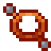

Reference: pages
Reference
Cross-Connect

encodedlogistics:cross_connect · Item · Stacks to 64 · Creative tab: Encoded Logistics: Parts & Tools
Joins a Router to an Internet Exchange: use it on the Router's unit in an open rack, then on an Exchange Switch. The Router joins (or asks to, if the owner approves members) and the Cross-Connect is used up.
Cross-Connect
Shift: Use on a Router's unit in an open rack, then on an Exchange Switch: the Router joins the exchange (or asks to).
Works with
How to get it
encodedlogistics:cross_connect
Used to make
Nothing.
Where it's documented
- Exchange Switch and Directory Server (Networking)
- Routers (Networking)